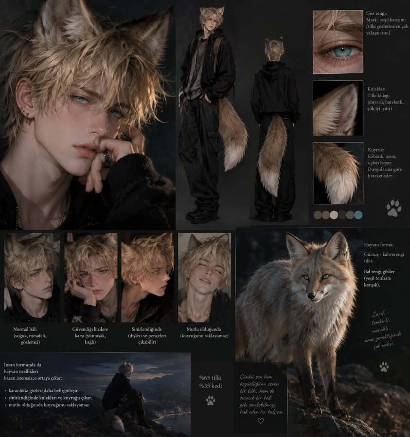
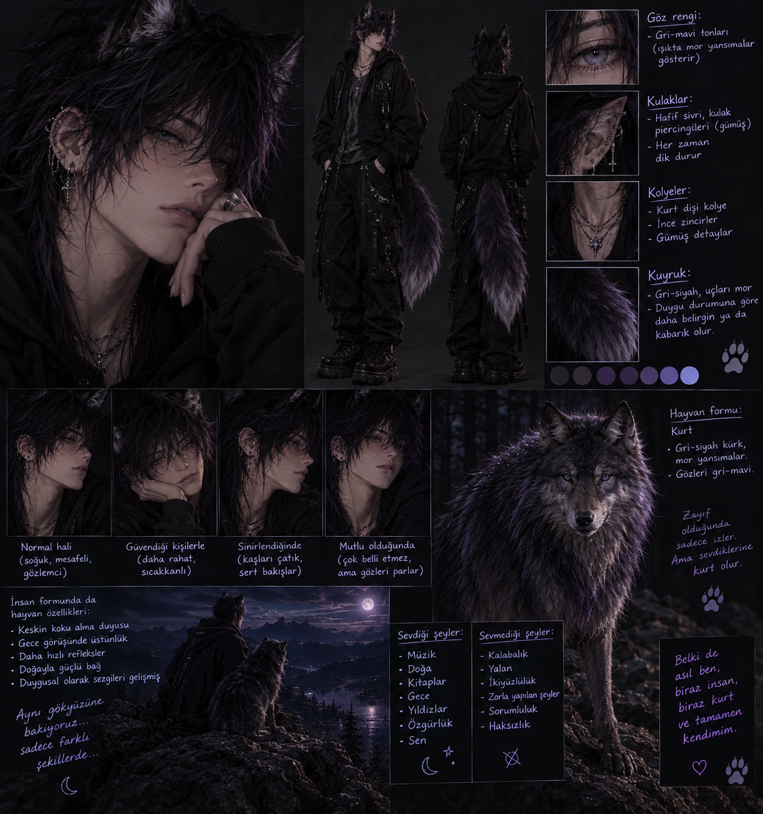

✦ NIGHTFRAME ORIGINAL
THE WOLF
BENEATH THE MOON
Bazı karşılaşmalar tesadüf değildir. Bazı yabancılar ise hayatından çıkmak için fazlasıyla iyi bir neden bulur.
Hikâye hakkında
ORIGINAL SERIESİnsanlarla şekil değiştiricilerin aynı şehirde yaşadığı bir dünyada, yanlış zamanda yanlış yerde bulunan konuşkan bir tilki, hiç tanımadığı bir kurdun koluna girer.
Küçük bir yalanın birkaç saniyede çözüleceğini düşünür. Oysa o gece başlayan şey, ikisinin de hayatını değiştirecek bir gizemin ilk adımıdır.
Durum
Devam ediyor
Bölüm sayısı
3 bölüm
Tür
Fantastik · Romantizm · Gizem
Okuma biçimi
Dikey kaydırma
Bölümler
READ FROM THE BEGINNING
✦ Yeni bölümler ve hikâyeye ait gizli ayrıntılar
zamanla açığa çıkacak. Dikkatli oku; her şey
ilk bakışta göründüğü gibi değil.